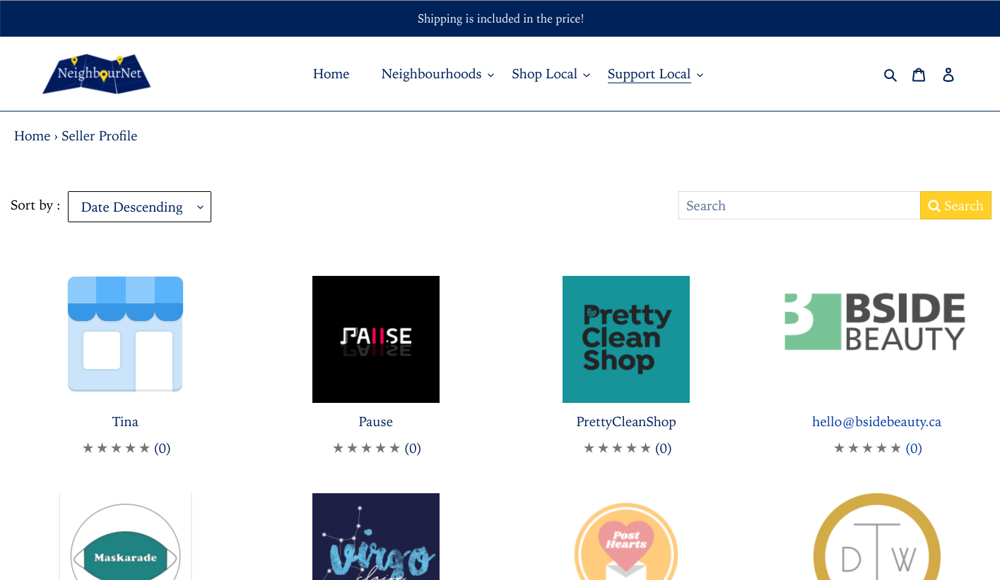

NeighbourNet was liquidated in June 2021. Thanks for joining us on our journey!
NeighbourNet is a multivendor e-commerce platform (like eBay) that provides local businesses an end-to-end online sales and marketing platform to promote, sell and ship their products, as well as showcase their backstories, receive customer feedback and even launch donation campaigns. We provide a connective network of small local businesses (‘Owners’) to their local customers (‘Neighbours’) who are looking for an aggregated marketplace to facilitate simple and speedy purchases, all while supporting their local economy.
NeighbourNet advertisement recorded in Roncesvalles.
Over the duration of 9 months, we partnered with over 30 local businesses around Toronto. Some of our partners included: Kid Icarus, Willen and Jools, BSIDE Beauty, Devil's Workshop, Pluto Collectives, and Beadworks. Once pandemic restrictions were lifted, our business model became unsustainable so through our internal connection with Doordash, we passed our clients over so that the local shops could sign up for Doordash’s Storefront system if they chose to do so since we were closing our shop and website.
Our team of 20 (pictured above) worked relentlessly over the pandemic to bring NeighbourNet to life. From working with businesses to ensure their demands were met, to facilitating orders, to continuously improving the frontend website for customers and backend platform for shops to manage products, we were able to accomplish our mission of promoting local businesses during the pandemic through online means.